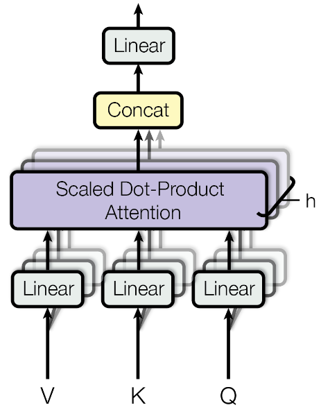

一句话通俗理解：Transformer 通过多头注意力与前馈残差堆叠，将离散 token 编码为可推理的上下文表示并支持自回归生成。
LLM 的核心架构是 Transformer Decoder-Only 结构。理解其每个组件的设计动机是理解所有后续技术的基础。
经典 Transformer 与 LLM 关系#
- 对于 原始 Transformer（seq2seq），
Encoder + Decoder的表述是准确的： Encoder通过多层 self-attention 并行建模输入序列中 token 的全局依赖，得到上下文语义表示。Decoder在生成时使用 masked self-attention 保持自回归约束，并通过 cross-attention 融合 Encoder 语义表示，按 next-token prediction 逐步生成输出。- 对于 主流 LLM（GPT/LLaMA/Qwen），通常采用
Decoder-only架构，不包含独立 Encoder，也不使用经典 seq2seq 的 cross-attention。
定义与目标#
- 定义：Transformer Decoder-Only 是当前主流 LLM 的基础架构。
- 目标：在自回归生成范式下，稳定高效地建模长序列中的上下文依赖关系。
适用场景与边界#
- 适用场景：用于模型结构选型、模块拆解与架构原理学习。
- 不适用场景：不适用于脱离数据与训练策略单独评估最终能力。
- 使用边界：实际效果受参数规模、数据分布和推理策略共同影响。
关键步骤#
- 输入 Token 先做嵌入并加入位置信息（如 RoPE）。
- 在每个 Block 内执行“Attention + FFN”的残差更新。
- 通过归一化与训练技巧保证深层网络稳定收敛。
- 推理时结合 KV Cache 降低重复计算。
图文速览（参考 llm_interview_note）#

图示解读：上图展示了 Q/K/V 交互与注意力加权的直观过程，适合先建立“查询-匹配-聚合”的整体心智模型。
flowchart LR
A["Token Embedding"] --> B["Q/K/V Projection"]
B --> C["Scaled Dot-Product Attention"]
C --> D["Multi-Head Concat + Linear"]
D --> E["Residual + Norm + FFN"]
E --> F["Next Layer / Logits"]
核心组件解析#
1. Multi-Head Self-Attention (MHSA)#
- 动机：单头注意力只能捕获一种关联模式，多头并行允许模型同时关注不同子空间的语义关系。
- 计算流程：
1. 输入 \(X\) 通过三个独立线性变换得到 \(Q, K, V\)
2. 每个 Head 独立计算 Scaled Dot-Product Attention
3. 所有 Head 的输出拼接后经线性投影得到最终输出 - 关键参数：
num_heads、head_dim = d_model / num_heads
2. 位置编码 (Positional Encoding)#
| 方案 | 原理 | 代表模型 |
|---|---|---|
| Sinusoidal (绝对) | 固定正弦/余弦函数，不可学习 | 原始 Transformer |
| Learned (可学习) | 每个位置对应一个可训练向量 | GPT-2, BERT |
| RoPE (旋转) | 通过旋转矩阵编码相对位置，外推性强 | LLaMA, Qwen |
| ALiBi | 在 Attention 分数上加线性偏置，无需修改嵌入 | MPT, BLOOM |
3. 归一化策略 (Normalization)#
- Post-LN（原始 Transformer）：梯度不稳定，深层网络难以训练。
- Pre-LN（现代 LLM 标准）：将 LayerNorm 移至残差连接之前，显著提升训练稳定性。
- RMSNorm：去掉均值中心化，只做 RMS 缩放，计算更高效，效果相当。
4. FFN 层 (Feed-Forward Network)#
- 标准 FFN： \(\mathrm{FFN}(x) = \mathrm{ReLU}(xW_1 + b_1)W_2 + b_2\)，隐层维度通常为 \(4 \times d_{\mathrm{model}}\)。
- SwiGLU（LLaMA 系列）： \(\mathrm{SwiGLU}(x) = (\mathrm{Swish}(xW_1) \odot xW_2)W_3\)，门控机制提升表达能力。
5. KV Cache（推理关键）#
- 问题：自回归生成时，每步都需要重新计算所有历史 Token 的 K/V，计算冗余。
- 方案：将已计算的 K/V 缓存起来，每步只计算新 Token 的 K/V并追加。
- 代价：显存占用随序列长度线性增长： \(2 \times L \times H \times d \times \mathrm{precision}\) 。
6. 扩展架构：MoE (Mixture of Experts)#
当 Dense 模型规模达到瓶颈时，MoE 通过稀疏化提升参数容量。
- 核心组件：
1. Gate (Router)：决定输入 Token 分配给哪几个专家。
2. Experts：一系列独立的 FFN 层。 - 并行策略：Expert Parallelism (EP)：
- 将不同的专家分布在不同的 GPU 上。
- 通信压力：引入 All-to-All 通信，在路由 Token 时产生巨大开销。
- 关键挑战：
1. Load Balancing：专家利用率不均导致计算长尾。常用 辅助损失 (Auxiliary Loss) 强制均衡。
2. 稀疏计算优化：需要定制的并行内核（如 Fused MoE Kernels）减少碎片化计算。
关键公式#
Attention(Q, K, V) = softmax((QK^T) / sqrt(d_k)) * V
符号说明：
- Q, K, V：查询、键、值矩阵。
- d_k：键向量维度，用于缩放稳定梯度。
工程实现要点#
- 参数量估算： \(\approx 12 \times d_{\mathrm{model}}^2 \times n_{\mathrm{layers}}\) （忽略 embedding）
- 计算量估算： \(\approx 6 \times N \times T\) FLOPs（N=参数量，T=序列长度）
- 显存分解：权重 + 梯度 + 优化器状态 + 激活值，训练时约为推理的 12-16 倍
关键步骤代码（纯文档示例）#
x = token_embedding(input_ids) # [B, T, d_model]
for block in transformer_blocks:
# Attention 子层：RMSNorm -> RoPE -> Self-Attention -> Residual
x = x + block.self_attn(block.rmsnorm_1(x), rope_cache)
# FFN 子层：RMSNorm -> MLP -> Residual
x = x + block.mlp(block.rmsnorm_2(x))
logits = lm_head(final_rmsnorm(x)) # [B, T, vocab_size]
常见错误与排查#
- 症状：长序列下显存快速爆炸。
原因：KV Cache 与注意力开销评估不足。
解决：提前做显存预算并限制 max length 或采用更优缓存策略。 - 症状：结构改动后效果不稳定。
原因：训练配置与初始化策略未同步调整。
解决：固定基线配置，逐项 ablation 并记录每次改动。
与相近方法对比#
| 方法 | 优点 | 局限 | 适用场景 |
|---|---|---|---|
| 本文主题方法 | 紧贴本节问题定义 | 依赖数据与实现质量 | 适合结构化评测与迭代优化 |
| 对比方法A | 上手成本更低 | 能力上限可能受限 | 快速原型与基线对照 |
| 对比方法B | 上限潜力更高 | 调参与资源成本更高 | 高要求生产或复杂任务场景 |